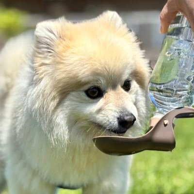

INTRODUCTION
ABOUT
02
PROFILE
KaN
・eスポーツチーム「Weiser Osaka」運営所属。
・Webサイト、Discord BOTなどを中心に制作しています。
・現在18歳大学1年生。
・SEを目指して日々勉強中です。
WHY I STARTED
Web制作を
始めた理由
とあるプロeスポーツチームのサイトを見たことがきっかけです。
Googleサイトでサイトを作成することはありましたが
実際にコードなどを書きたいと思うようになり、
日々勉強しながらこのような活動をしております。
MY VALUES
制作で大切にしていること
- 01
使いやすさまで、デザインする
見た目だけでなく、迷わず操作できることや読みやすさも同じくらい大切にします。
- 02
目的とイメージを、丁寧にくみ取る
依頼者が実現したいことを言葉の奥まで考え、方向性を共有しながら形にします。
- 03
初めて見る人にも、きちんと伝える
前提知識がなくても内容を理解できる、情報設計と分かりやすい表現を心がけます。
- 04
細部にこそ、妥協しない
余白、文字、動き、操作感。小さな違和感を見逃さず、完成度を高めます。
SKILLS
使用可能な
ツール
HTMLCSSJavaScriptPythonCGitHubAI
ACHIEVEMENTS
制作実績はこちら。
現在までの実績はこちらから閲覧可能です。
制作内容を見る →